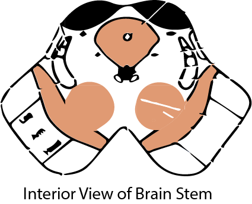
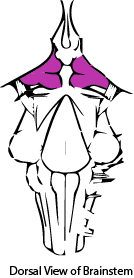
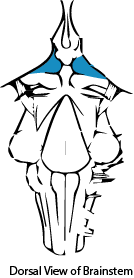
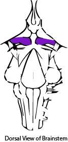
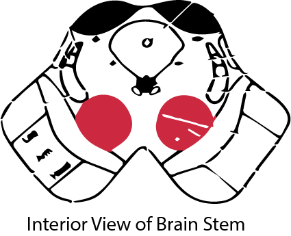
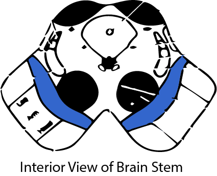
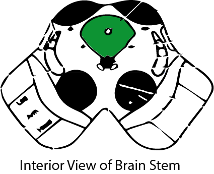

Midbrain
The midbrain is the superior most portion of the brainstem that is concerned with important functions such as motor movement and auditory and visual processing.
Tectum
The tectum is the posterior portion of the midbrain with two main subsections, superior and inferior colliculi .
Superior Colliculi
The superior colliculi participates mainly in visual reflexes, such as tracking objects in the visual field, by using information passed from the retina and visual cortex.
Inferior Colliculi
The inferior colliculi is a relay station for auditory fibers from the temporal lobe to connect with the auditory section of the thalamus.
Tegmentum
The tegmentum is located anterior to the tectum within the midbrain. It is mainly comprised of fiber tracts and has three main subsections: the red nucleus , substantia nigra, and the periaqueductal gray.
Red Nucleus
The red nucleus is the medial most part of the tegmentum and is involved with the coordination of sensorimotor information.
Substantia Nigra
The substantia nigra is located in the anterior portion of the tegmentum and is primarily involved with reward and movement.
Periaqueductul Gray
The periaqueductul gray is a cluster of neurons that are located around cerebral aqueduct within the tegmentum. It’s primary function is the primary control center for descending pain modulation.
Basal Ganglia
The basal ganglia is a group of nuclei that are located at the base of the midbrain, with one of the nuclei being the substantia nigra. The basal ganglia participate in action selection (deciding which of several possible actions to execute at any given time). It also helps in making sure that voluntary movement is executed in a smooth fashion.